Emicizumab & Hemophilia A
Emicizumab (Hemlibra)
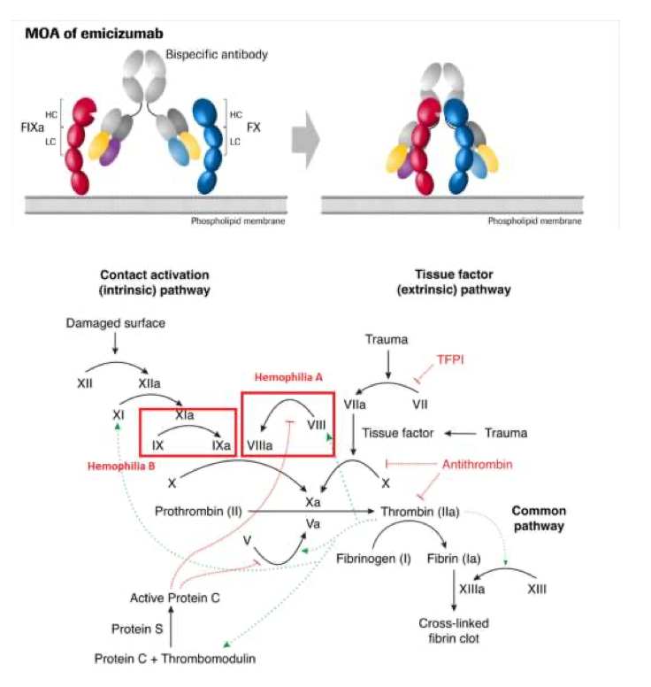
- Only useful for Hemophilia A (Factor VIII deficiency) — does nothing for Hemophilia B (Factor IX deficiency)
- It's a bispecific antibody — a Y-shaped antibody where each arm grabs a different target:
- One arm grabs activated Factor IX (IXa)
- The other arm grabs Factor X
- By physically holding them together, it mimics the cofactor function of activated Factor VIII
Dental Management of Oncologic Patients
Pre-Transplant Dental Clearance
Pre-Transplant Clearance = Infection Control
- Odontogenic infections can be life-threatening during profound immunosuppression
- Only 0.57% develop odontogenic complications with appropriate clearance
- Asymptomatic disease still matters — non-vital teeth and untreated periapical pathology must be eliminated
Mota & Alves (2025). Clin Oral Investig, 29, 576. Hansen et al. (2021). Support Care Cancer, 29(4), 2231–2238.
Timing & Clearance
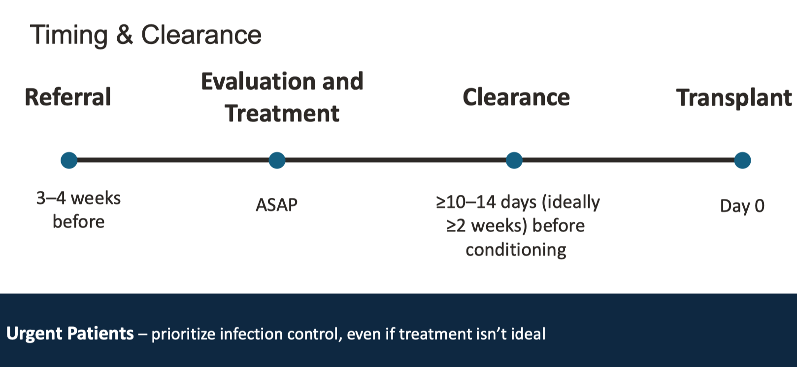
Tomblyn et al. (2009). Biol Blood Marrow Transplant, 15(10), 1143–1238.
Treatment Types & Decision Tables
Healing Windows & Risk Periods
| Treatment Type | Healing Window | Highest Risk Period | Can Delay Treatment? |
|---|---|---|---|
| HSCT Bone marrow transplant | 10–14 days pre-conditioning | Days 0–100 (pre-engraftment) | NO |
| Solid Organ Transplant | None required | First 1–6 months post-transplant | NO |
| Standard Chemotherapy | None required | During neutropenia (ANC <1000) | NO — can do dental between cycles |
| Intensive Chemotherapy | None required | Days 0–100 (prolonged neutropenia) | NO |
| Head & Neck Radiation | ≥2 weeks pre-RT | Lifelong (ORN risk) | NO |
| Bone-Modifying Agents Bisphosphonates, denosumab | Complete healing before starting | Lifelong (MRONJ risk 1.6–14.8%) | Maybe — coordinate with oncology |
- ANC = Absolute Neutrophil Count. Below 1000 = neutropenic = severely immunocompromised.
- ORN = Osteoradionecrosis. Radiation permanently damages bone blood supply. Extraction after radiation can create a wound that never heals. This risk is lifelong.
- MRONJ = Medication-Related Osteonecrosis of the Jaw. Bisphosphonates/denosumab shut down osteoclasts. Extracting creates a wound in bone that can't remodel → exposed, dead bone.
- Engraftment = When transplanted bone marrow starts producing new blood cells (~Day +14–28).
- Conditioning = Chemo/radiation given right before transplant to destroy existing bone marrow.
Peterson DE et al. (2024). J Clin Oncol. 42(11):1267–1291. Yarom N et al. (2019). J Clin Oncol. 37(25):2270–2290.
ADA Caries Classification (ICDAS)
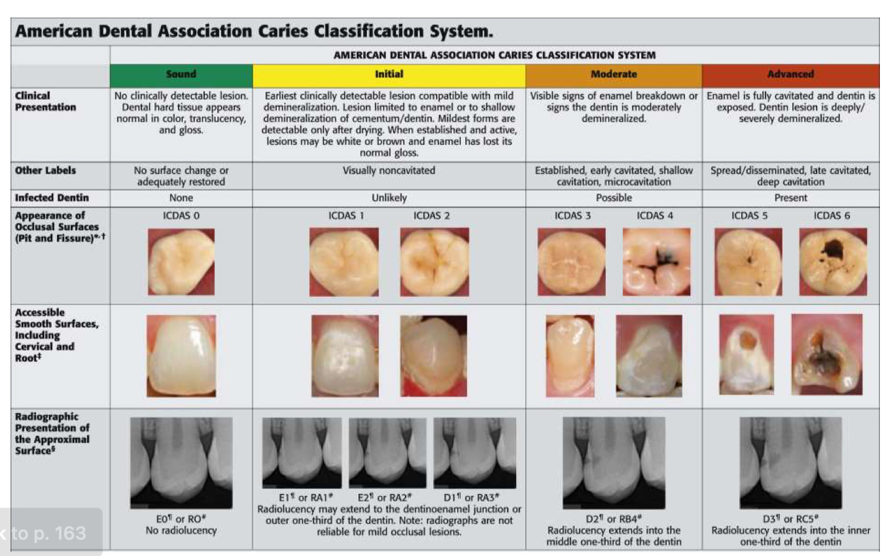
| Classification | Clinical Presentation | ICDAS | Radiographic | Infected Dentin? |
|---|---|---|---|---|
| Sound | No detectable lesion. Normal color, translucency, gloss. | 0 | No radiolucency (E0/RO) | None |
| Initial | Earliest detectable. Enamel/shallow demineralization. Noncavitated. White/brown spot. | 1–2 | May extend to DEJ or outer 1/3 dentin | Unlikely |
| Moderate | Visible enamel breakdown. Early/shallow cavitation. | 3–4 | Middle 1/3 of dentin (D2/RB4) | Possible |
| Advanced | Fully cavitated. Deep dentin exposed. | 5–6 | Inner 1/3 of dentin (D3/RC5) | Present |
Lesion Management by Treatment Type
| Lesion | HSCT | Solid Organ | Standard Chemo | Head & Neck RT | Bone-Modifying Agents |
|---|---|---|---|---|---|
| D1 (Enamel) | SDF + 5000ppm F | SDF + 5000ppm F | Fluoride varnish | Fluoride varnish | Fluoride varnish |
| D2 (Dentin, not deep) | SDF + ITR if hyposalivation; extract if rampant | SDF + ITR acceptable | Observe or restore if time | Restore if time; SDF if not | Restore before starting BMA |
| D3 (Deep) | Extract | Extract or restore if 2–3 days | Restore if time; observe if asx | Pre-RT: Extract if in field Post-RT: Endo + coronectomy | Pre-BMA: Extract On BMA: Endo + coronectomy |
| D4 (Pulpal) | Extract | Extract | Extract or endo | Pre-RT: Extract Post-RT: Endo + coronectomy | Pre-BMA: Extract On BMA: Endo + coronectomy |
| Severe perio (≥6mm) | Extract | Extract | Observe | Extract if in RT field | Extract before starting |
| Impacted 3rd molars | Extract if pericoronitis hx | Consider extraction | Observe | Pre-RT: Extract if time Post-RT: Coronectomy if sx | Extract before starting; coronectomy + endo if on BMA |
Coronectomy = removing the crown but leaving roots in bone. In irradiated bone (ORN risk) or BMA-treated bone (MRONJ risk), an extraction wound may never heal. Leaving roots avoids the wound while removing the caries source.
SDF = Silver Diamine Fluoride. Arrests active caries without drilling. Silver kills bacteria, fluoride remineralizes. Turns lesion black.
ITR = Interim Therapeutic Restoration. Temporary filling (glass ionomer) placed without full prep. Quick, minimally invasive, releases fluoride.
Raber-Durlacher JE et al. (2013). Support Care Cancer. 21(11):3053–3060.
Post-Treatment Dental Care
| Treatment | Safe for Elective Dental Work | Extraction Precautions | Preventive Protocol |
|---|---|---|---|
| HSCT | ANC >1000, platelets >50K, ideally day +100 | Avoid during neutropenia | 5000ppm F daily; chlorhexidine rinse |
| Solid Organ | After 6 months (immunosuppression tapered) | Check with transplant team first month | 5000ppm F if xerostomia |
| Chemotherapy | Between cycles if ANC >1000, platelets >50K | CBC day of procedure | 5000ppm F daily; saline/bicarb rinses |
| Head & Neck RT | Anytime with precautions; avoid ≥50 Gy areas | Abx pre/post; pentoxifylline 400mg BID + tocopherol 1000 IU daily | Daily 1.1% NaF gel or varnish 3x/year (LIFELONG) |
| BMA (oncologic dose) | Elective surgery contraindicated | If must extract: monitor q6–8 weeks until healed | Dental exam q6 months; address modifiable risks |
- Day +100: When new bone marrow is established and producing enough immune cells after HSCT.
- Pentoxifylline + Tocopherol (PENTOCLO): Pentoxifylline improves blood flow; tocopherol (vitamin E) reduces oxidative damage. Standard of care for extractions in irradiated fields.
- Why lifelong fluoride after H&N RT? Radiation damages salivary glands → permanent xerostomia → rampant "radiation caries" without prescription fluoride.
- Why is BMA elective surgery contraindicated? Bisphosphonates bind bone with half-lives of years to decades. Even after stopping, any jaw bone wound risks MRONJ.
Systemic & Syndromic Conditions
Condition Triage
Tier 1 High Priority
- Lupus Erythematosus
- Vitamin Deficiencies
- Sarcoidosis
Tier 2 Moderate Priority
- GPA (Wegener)
- Amyloidosis
- Peutz-Jeghers Syndrome
Tier 3 Lower Priority
- Ehlers-Danlos Syndrome
- Hypothyroidism / Hyperthyroidism
- Hereditary Hemorrhagic Telangiectasia
- Cowden Syndrome
- Addison Disease
Tier 4 Minimal Coverage
- CREST Syndrome
- Reactive Arthritis (Reiter)
- Multiple Hamartoma Syndrome
Lupus Erythematosus
Understanding Lupus
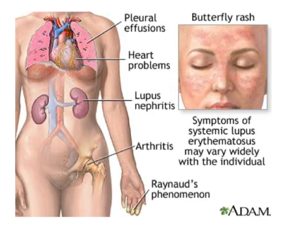
Two Forms
Systemic Lupus (SLE)
- Multi-organ: skin, joints, kidneys, lungs, heart, CNS, blood
- Can be life-threatening
- Requires systemic treatment
Discoid Lupus (DLE)
- Cutaneous (skin) form only
- Characteristic disc-shaped skin lesions
- Does not involve internal organs
Systemic Manifestations — Why You Care as a Dentist
- Hematologic: Thrombocytopenia (low platelets → bleeding), neutropenia (low WBCs → infection), hemolytic anemia
- Renal: Lupus nephritis in ~40% → 10% progress to ESRD — affects drug dosing
- Cardiac: Pericarditis (~25%), valve disease
- Pulmonary: Pleuritis (16%), ILD
- Neuropsychiatric: ~50% — seizures, psychosis, cognitive dysfunction
- Medications: Immunosuppressants, steroids, anticoagulants
Oral Manifestations
- Oral Ulcers: Painless or painful; classically on hard palate and buccal mucosa; part of SLE classification criteria (2 points)
- Discoid Lesions: Erythema + radiating white striae (looks similar to OLP)
- Hyposalivation: Secondary Sjögren overlap is common
- Increased caries and perio from altered salivary flow
- Lichenoid drug reactions from hydroxychloroquine and NSAIDs
Oral Lupus vs. Oral Lichen Planus (OLP)
| Feature | Oral Lupus | Oral Lichen Planus |
|---|---|---|
| Striae Pattern | Radiating from center (like sun rays) | Reticular/lacy (Wickham striae) |
| Center of Lesion | Erythema or ulceration | Usually intact |
| DIF | Granular IgG/IgM/C3 — "Lupus Band" | Fibrinogen at DEJ |
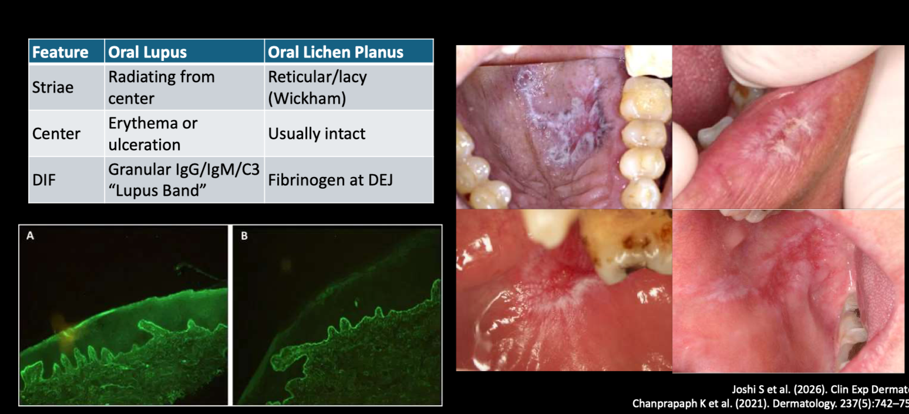
DIF (Direct Immunofluorescence) = take a biopsy, stain with fluorescent antibodies, look under UV. The antibodies stick to immune complexes and glow.
In lupus: continuous granular band of IgG, IgM, and C3 along the basement membrane = the "Lupus Band."
In lichen planus: fibrinogen at the DEJ. Different protein, different pattern.
Workup & Diagnosis
Biopsy
- H&E + DIF — you need both. DIF shows the lupus band.
If You Suspect New Lupus — Refer to Rheumatology
- ANA: Best screening test — very sensitive but not specific
- Anti-dsDNA: 60–80% of active lupus; specific. Levels correlate with disease activity.
- Anti-Sm (Smith): 10–30% of patients, but Most Specific for lupus
- CBC, CMP, complement (C3, C4 consumed in active lupus)
- ANA = wide net (sensitive, not specific) — catches lupus but also other autoimmune
- Anti-dsDNA = medium net (more specific, correlates with flares)
- Anti-Sm = laser-guided (most specific, but only positive in 10–30%)
SLE Classification Criteria (2019 EULAR/ACR)
Entry: ANA ≥1:80 on HEp-2 cells. If absent → not SLE.
If positive → additive criteria. Need ≥10 points + ≥1 clinical criterion.
| Clinical Domain | Criteria | Weight |
|---|---|---|
| Constitutional | Fever | 2 |
| Hematologic | Leukopenia | 3 |
| Thrombocytopenia | 4 | |
| Autoimmune hemolysis | 4 | |
| Neuropsychiatric | Delirium | 2 |
| Psychosis | 3 | |
| Seizure | 5 | |
| Mucocutaneous | Non-scarring alopecia | 2 |
| Oral ulcers | 2 | |
| Subacute cutaneous OR discoid lupus | 4 | |
| Acute cutaneous lupus | 6 | |
| Serosal | Pleural or pericardial effusion | 5 |
| Acute pericarditis | 6 | |
| Musculoskeletal | Joint involvement | 6 |
| Renal | Proteinuria >0.5g/24h | 4 |
| Class II or V lupus nephritis | 8 | |
| Class III or IV lupus nephritis | 10 |
| Immunology Domain | Criteria | Weight |
|---|---|---|
| Antiphospholipid | Anti-cardiolipin OR Anti-β2GP1 OR Lupus anticoagulant | 2 |
| Complement | Low C3 OR low C4 | 3 |
| Low C3 AND low C4 | 4 | |
| SLE-specific | Anti-dsDNA antibody | 6 |
| Anti-Smith antibody | 6 |
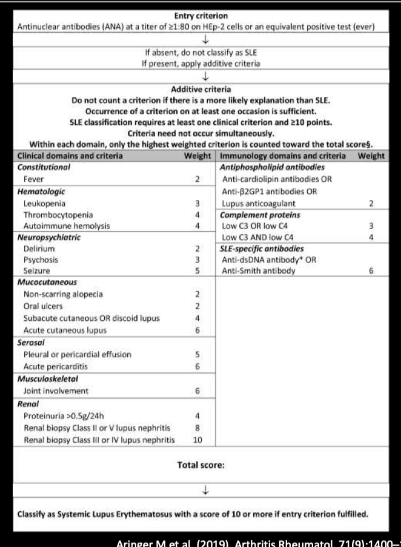
Management of Oral Lupus Lesions
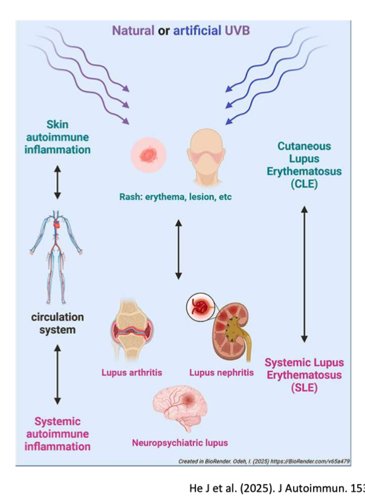
- Topical (1st line): Generalized: Dexamethasone rinse; Focal: Fluocinonide 0.05% or Tacrolimus 0.1%
- Intralesional: Triamcinolone 40 mg/mL
- Systemic: Hydroxychloroquine
- All patients: Smoking cessation + sun protection
Siegel CH, Sammaritano LR. (2024). JAMA. 332(4):326–337. He J et al. (2025). J Autoimmun. 153:103393.
Sarcoidosis
Understanding Sarcoidosis
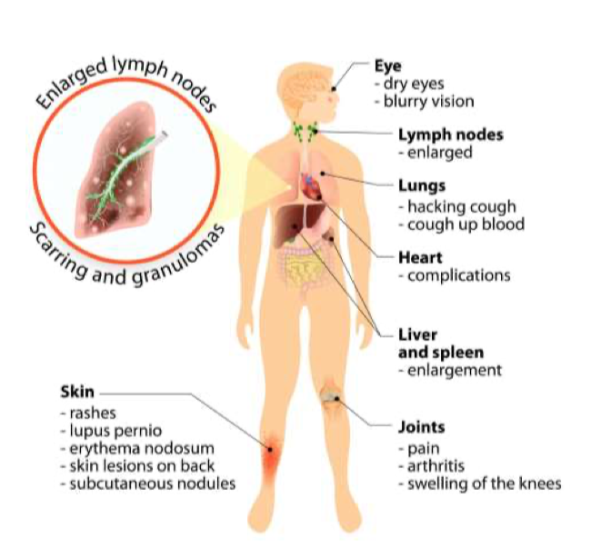
- Lungs involved in >90%; can affect virtually any organ
- ~50% spontaneous remission; ~1/3 chronic disease
- Cardiac/neurologic involvement → increased mortality
Systemic Manifestations
- Pulmonary (>90%): Cough, dyspnea, bilateral hilar adenopathy
- Skin: Lupus pernio, erythema nodosum, papules/plaques
- Eyes (20–25%): Uveitis, sicca symptoms
- Cardiac (10–20%): Arrhythmias, cardiomyopathy
- Neurologic (10–25%): Cranial nerve palsies, neuropathy
- Medications: Steroids, methotrexate, biologics
Oral Manifestations
- Soft tissue: Nodules, ulcers, swelling of tongue, lips, gingiva, palate
- Bone: Alveolar bone loss, tooth mobility
- Salivary glands: Parotid swelling, hyposalivation
- Gingiva: Gingivitis, gingival enlargement
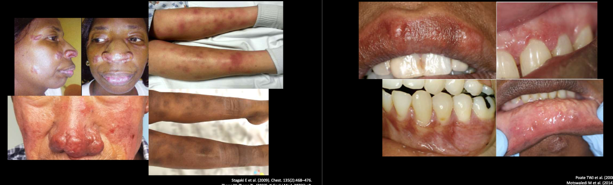
Workup & Treatment
Workup
- Biopsy: Noncaseating granulomas. Must exclude TB and fungal infection.
- Chest X-ray/CT: Bilateral hilar adenopathy — highly specific
- Labs: ACE elevated in ~60%; CBC, CMP, calcium
- Refer to pulmonology/rheumatology
- Before procedures: Know if on immunosuppressants; check CBC if on methotrexate
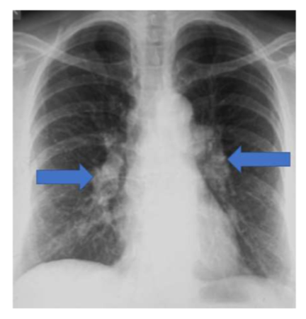
Treatment
- Observation for asymptomatic oral lesions (~50% remit spontaneously)
- Corticosteroids: Prednisone 20–40 mg/day. Topicals are not proven successful.
- Steroid-sparing: Methotrexate; Hydroxychloroquine (especially cutaneous/oral)
- Surgery: For localized, symptomatic lesions only
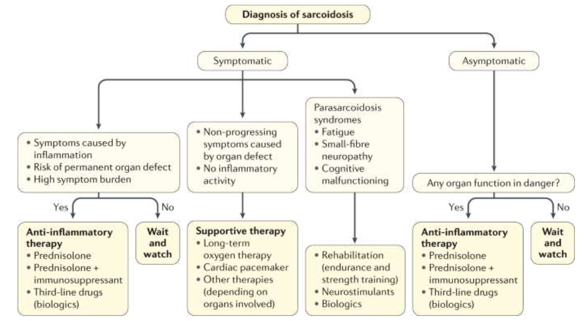
Partin M et al. (2024). Am Fam Physician. 109(3):239–247. Drent M et al. (2021). N Engl J Med. 385(11):1018–1032.
Granulomas vs. Granulation Tissue
Granulation Tissue
- Clinical term (what you see with eyes), not histologic
- Describes grainy appearance of healing tissue
- Classically in extraction sockets (normal healing)
- Made of new blood vessels + fibroblasts
Granulomas
- Histologic finding (under microscope)
- Clusters of macrophages + giant cells
- Pyogenic granuloma is NOT a granuloma
- Immune system walling off something it can't destroy
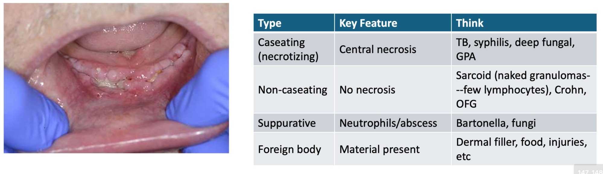
Types of Granulomatous Disease
| Type | Key Feature | Think… |
|---|---|---|
| Caseating (necrotizing) | Central necrosis (cheesy dead center) | TB, syphilis, deep fungal, GPA |
| Non-caseating | No necrosis ("naked granulomas") | Sarcoidosis, Crohn, OFG |
| Suppurative | Neutrophils/abscess within granuloma | Bartonella, fungi |
| Foreign body | Foreign material visible | Dermal filler, food, injuries |
Non-caseating = sarcoidosis (or Crohn). No pathogen to kill, no necrosis.
Suppurative = abscess + granuloma. Classic: Bartonella.
Foreign body = culprit visible under microscope.
Vitamin Deficiencies & Toxicities
Who Gets Vitamin Deficiencies?
- Common in: Alcohol use disorder, older adults, malabsorption, post-bariatric surgery, restrictive diets
- High-risk for restrictive diets: ASD, ARFID, OCD, schizophrenia, depression, institutionalized, incarcerated, unhoused, refugee
Vitamin A, B6, D, zinc, B12 → toxicity from over-supplementation.
Vitamin Deficiencies
| Deficiency | Systemic Manifestations | Oral Manifestations |
|---|---|---|
| Vitamin B12 |
|
|
| Iron |
|
|
| Vitamin C (Scurvy) |
|
|
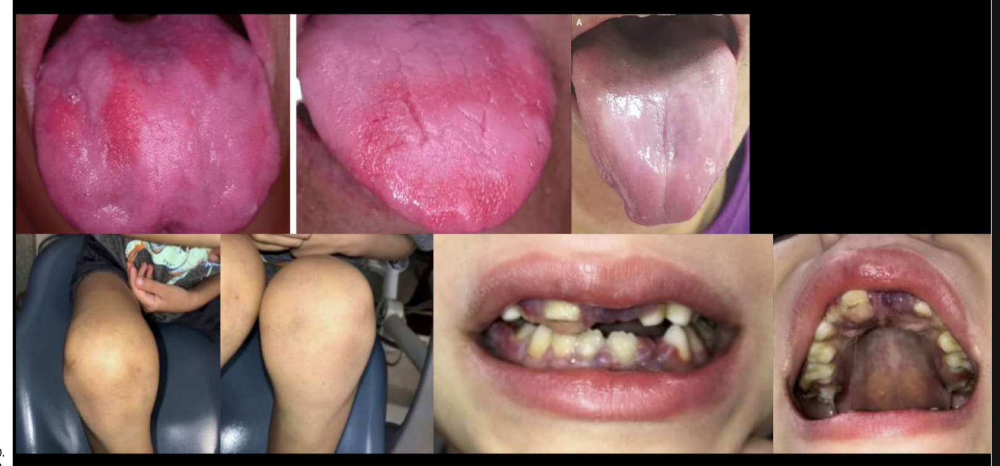
- "Beefy red" (B12): Tongue loses papillae and becomes smooth, intensely red. B12 needed for epithelial cell turnover.
- Plummer-Vinson (Iron): Triad of iron deficiency anemia + dysphagia + esophageal webs. Increases esophageal SCC risk.
- Why scurvy destroys gingiva: Vitamin C is essential for collagen synthesis (cofactor for prolyl/lysyl hydroxylase). Without collagen crosslinking, connective tissue falls apart → gingiva swells, bleeds, turns purple.
- Megaloblastic vs. microcytic: B12 = cells too big (can't divide). Iron = cells too small (not enough hemoglobin).
Vitamin Toxicities
| Excess | Source | Systemic | Oral |
|---|---|---|---|
| Vitamin A | Supplements; excessive liver | Hepatotoxicity; increased ICP; teratogenicity | Cheilitis, lip fissures; mucosal dryness/desquamation |
| Vitamin B6 | Supplements (>50 mg/day long-term) | Sensory neuropathy — may be irreversible | Dysesthesia; burning sensation |
| Vitamin B12 | High-dose supplements | Acne; anxiety (rare) | Dysgeusia |
| Vitamin D | Supplements (>10,000 IU/day) | Hypercalcemia; nephrolithiasis | No direct oral manifestations |
| Zinc | Supplements (>40 mg/day long-term) | Copper deficiency → anemia, neutropenia, neuropathy | Dysgeusia; GI upset |
Clinical Approach
Workup
Deficiency:
- CBC with differential
- Reticulocyte count
- B12, Folate
- Iron studies (ferritin, TIBC)
- Vitamin C level
Toxicity:
- Vitamin A level
- B6 (PLP)
- 25(OH)D, Calcium
- Zinc, Copper
Treatment
Deficiency:
- B12: 1000 μg IM/SQ (preferred if malabsorption) or oral high-dose
- Iron: Ferrous sulfate 325 mg daily; IV if intolerant
- Vitamin C: 500–1000 mg daily — rapid improvement within days
- Dietary: ketchup, pizza, potatoes = an orange!
Toxicity: Stop the offending supplement. Most reversible. B6 neuropathy may persist.
Stabler SP. (2013). N Engl J Med. 368(2):149–160. Pasricha SR et al. (2021). Lancet. 397:233–248.
Amyloidosis
Understanding Amyloidosis
| Type | Protein Source | Key Association | Deposits Where |
|---|---|---|---|
| AL (Primary) Most Common | Ig light chains from plasma cell disorders | Multiple myeloma | Tongue, heart, kidneys, nerves, liver. Has oral manifestations. Factor X adsorbed to fibrils. |
| AA (Secondary) | Serum amyloid A from chronic inflammation | RA, IBD, chronic infections | Kidneys, spleen, liver, thyroid, heart |
| Aβ2M (Dialysis) | β2-macroglobulin | Long-term dialysis | Bones, joints, tendons; rarely TMJ |
| ATTR | Transthyretin (hereditary or wild-type) | Cardiac amyloidosis | Primarily heart |
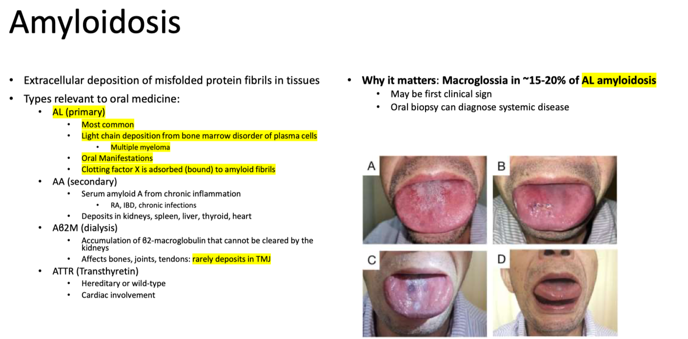
Manifestations
| Systemic | Oral |
|---|---|
| Nephrotic syndrome | Macroglossia |
| Restrictive cardiomyopathy | Hemorrhagic lesions (petechiae, ecchymoses, hematomas; Factor X deficiency) |
| Peripheral neuropathy | Papules/nodules: waxy, firm; tongue, buccal mucosa, lips |
| Hepatomegaly | Hyposalivation |
| Periorbital purpura ("raccoon eyes") Pathognomonic | Submandibular gland enlargement |
| Carpal tunnel syndrome | Jaw claudication (rare) |
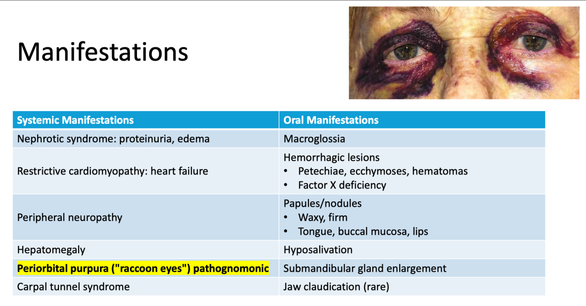
Diagnosis & Management
Diagnosis
- Incisional or labial salivary gland biopsy (sensitivity 58–86%; can diagnose without oral symptoms)
- Pathognomonic Congo red stain → apple-green birefringence under polarized light
- If AL suspected: SPEP/SUEP, free light chains, bone marrow biopsy
Before Oral Procedures
- Bleeding: Factor X deficiency → check PT/PTT, platelets
- Cardiac: Restrictive cardiomyopathy → may need cardiology consult
- Renal: Nephrotic syndrome → affects drug dosing
Treatment
- Managed by heme/onc
- AL: Chemotherapy (daratumumab-based), autoHSCT
- Prognosis: Median survival 6 months if untreated with cardiac involvement
Gertz MA, Dispenzieri A. (2020). JAMA. 324(1):79–89. Sanchorawala V. (2024). N Engl J Med. 390(5):456–467.
Peutz-Jeghers Syndrome (PJS)
Understanding PJS
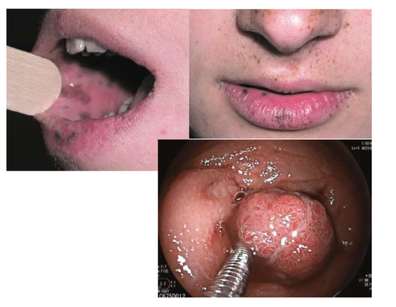
| Systemic | Oral |
|---|---|
| GI hamartomatous polyps | Perioral melanotic macules — lips, vermilion border |
| Intussusception, GI obstruction, bleeding | Intraoral pigmentation — buccal, gingiva, palate |
| 93% lifetime cancer risk | Macules: dark blue-brown, 1–5 mm |
| Polyps in childhood/adolescence | Pigmentation in infancy/early childhood |
| Lip lesions may fade after puberty; intraoral persist |
Diagnosis & Management
Diagnostic Features (need any one)
- ≥2 characteristic mucocutaneous macules
- ≥2 PJS-type hamartomatous polyps in GI
- Family history of PJS
DDx for Perioral Pigmentation
| Condition | How to Distinguish from PJS |
|---|---|
| Racial pigmentation | Diffuse, symmetric, attached gingiva. No polyps, no cancer risk. |
| Addison disease | Generalized hyperpigmentation. Systemic symptoms (fatigue, hypotension). Excess ACTH. |
| Laugier-Hunziker | Benign. Similar appearance but no polyps, no cancer risk. |
| Melanotic macule | Usually solitary, lower lip. PJS has multiple macules. |
- Upper/lower endoscopy starting age 8–10, every 2–3 years
- Breast MRI, pancreatic surveillance, gynecologic screening
Oral Medicine Role
- Recognize the pattern of perioral + intraoral macules
- Ask about GI symptoms: abdominal pain, bleeding, obstruction
- Refer to genetics/GI
- No treatment for oral lesions (cosmetic only; laser if desired)
GPA (Granulomatosis with Polyangiitis)
Understanding GPA
Findings
| Systemic | Oral |
|---|---|
| Sinusitis — chronic, destructive; saddle nose | Pathognomonic Strawberry gingivitis
|
| Pulmonary nodules/cavities → hemoptysis | Mucosal ulceration — nonspecific, rapidly progressive |
| Glomerulonephritis — hematuria, renal failure | Alveolar bone necrosis, tooth loss |
| Subglottic stenosis — stridor | Palatal perforation, oro-antral communication |
| Otitis media — conductive hearing loss |
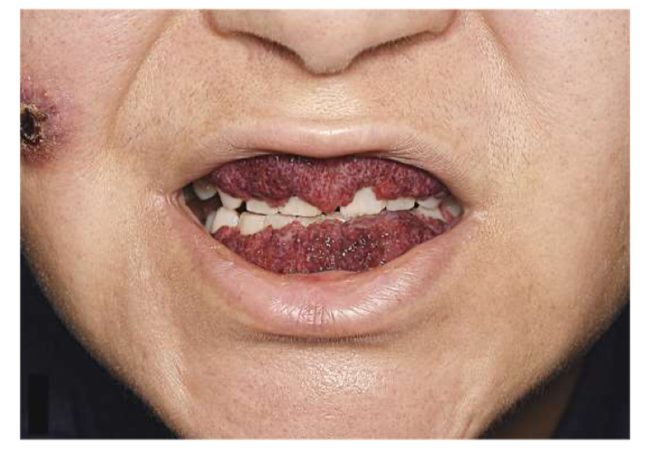
Diagnosis & Management
Diagnosis
- Gingival biopsy rarely shows classic necrotizing granulomatous vasculitis
- PR3-ANCA (c-ANCA): highly specific
- Urinalysis: hematuria, proteinuria
- Chest imaging: pulmonary nodules/cavities
- Biopsy: Nasal or lung more diagnostic than gingiva
Treatment (Managed by Rheumatology)
- Induction: Cyclophosphamide or rituximab + high-dose corticosteroids
- Maintenance: Rituximab, azathioprine, or methotrexate
Oral Medicine Role
- Recognize strawberry gingivitis — your awareness could lead to a life-saving diagnosis
- Coordinate care: patients will be immunosuppressed; check CBC before procedures
- Local: Oral lesions typically resolve with systemic treatment; ILST for recalcitrant ulcers/nodules
Ghiasi M. (2017). N Engl J Med. 377(21):2073.
Saddle Nose Defect DDx
Most Likely Causes
- GPA
- Relapsing polychondritis
- Traumatic injury with septal hematoma/necrosis
- Cocaine-induced septal destruction
- Iatrogenic / post-surgical collapse
Important Not to Miss
- Skeletal dysplasias (achondroplasia) — not true saddle nose, depressed ridge
- Nasal septal abscess
- Invasive fungal infection (mucormycosis)
- Congenital syphilis
- Leprosy (Hansen disease)
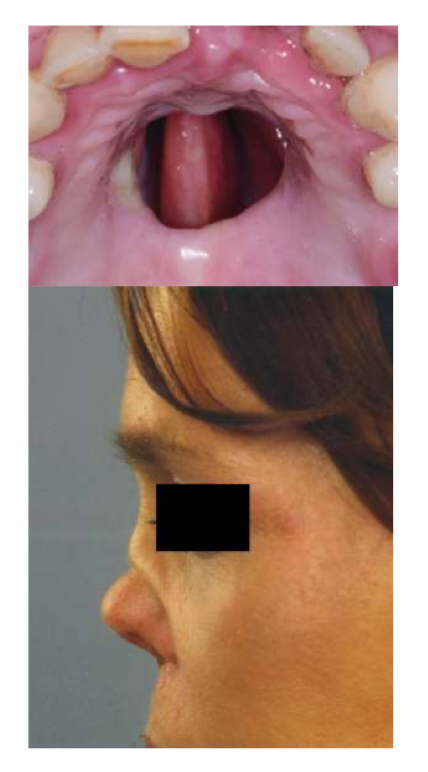
Rapid Review — Pathognomonic Findings
If You Remember Nothing Else
| Finding | Condition | What It Looks Like |
|---|---|---|
| Strawberry gingivitis | GPA (Wegener) | Erythematous-violaceous, hyperplastic, petechial gingiva |
| Periorbital purpura ("raccoon eyes") | AL Amyloidosis | Bilateral bruising around eyes from fragile vessels |
| Congo red → apple-green birefringence | Amyloidosis | Green glow under polarized light |
| Lupus band on DIF | Lupus Erythematosus | Granular IgG/IgM/C3 along basement membrane |
| Scorbutic gingivitis | Vitamin C deficiency (Scurvy) | Edematous, hemorrhagic, violaceous gingiva |
| Bilateral hilar adenopathy | Sarcoidosis | Symmetrically enlarged lymph nodes at lung hilum |
Key Antibodies & Labs
| Antibody/Lab | Condition | Clinical Significance |
|---|---|---|
| ANA | SLE (screening) | Best screening test; sensitive but not specific |
| Anti-dsDNA | SLE (active disease) | 60–80% of active lupus; specific; correlates with flares |
| Anti-Sm (Smith) | SLE | 10–30% of patients; MOST SPECIFIC for lupus |
| PR3-ANCA (c-ANCA) | GPA | >85% with systemic involvement; highly specific |
| ACE | Sarcoidosis | Elevated in ~60%; produced by granulomas themselves |
Source: Systemic and Syndromic Conditions. Dr. Laurel Henderson, DDS, MS. OD 531 Spring 2026, BU Henry M. Goldman School of Dental Medicine. Lecture date: 03/20/2026.
Disclaimer: All clinical facts, statistics, and treatment protocols are directly from the lecture slides. Foundational explanations are provided for comprehension. No information has been fabricated.